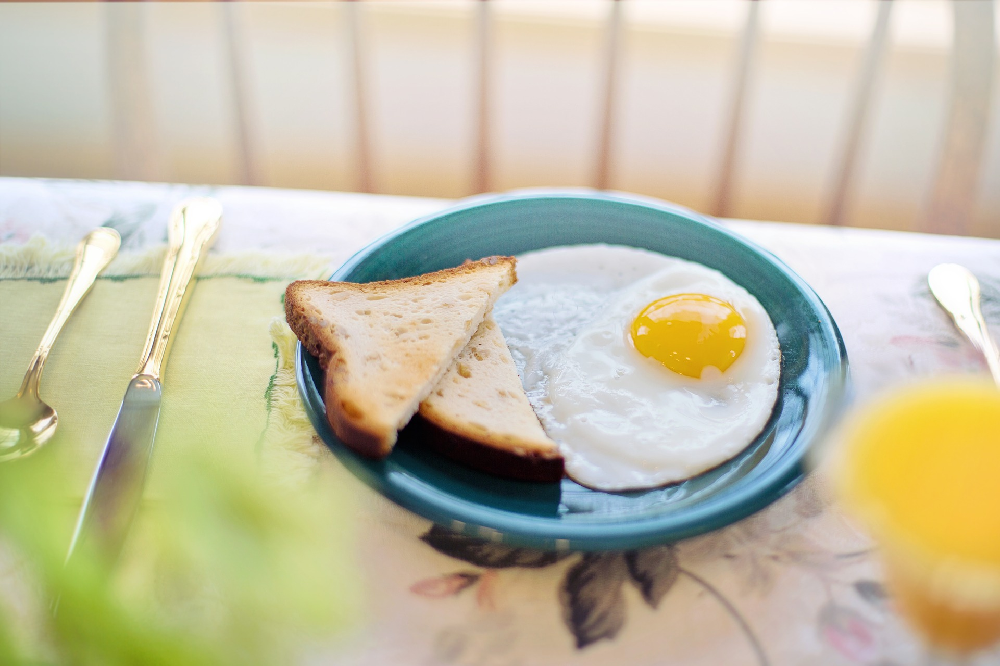

Breakfast toast for a splendid start into the new day

Description
This recipe shows how we can cook delicious eggs fried with olive oil. Unlike common breakfast eggs, these eggs have crispy edges and a gentle olive taste. They are best served with toast
Ingredients
- egg
- olive oil
- salt
- black pepper (optional)
Steps
- Pour a drizzle of olive oil into a frying pan
- Once the oil is hot, crack the egg into the pan
- Turn off the heat when the egg whites are set
- Add a dash of salt and peper and serve with toast